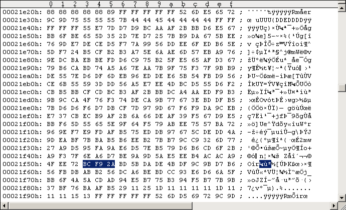

Main Index PatchesRapidLok2 patches: Disable the track alignment checks
In order to test remastered RapidLok2 disks it might be helpful having the track alignment checks disabled. All other integrity checks remain active. While RapidLok initially steps the head from Track 19 to 29 it searches for predefined sectors on Tracks 20-29. This predefined sectors must be immediately found within a two sector range, see following code snippet. --- ORIGINAL CODE ------------------------------ 04D4: A9 02 LDA #$02 ; 2 tries to find specific $75 data sector header: Track-to-Track-alignment!! 04D6: 20 92 06 JSR $0692 ; Locate $75 data sector header (track [$22], sector ID [$23]), CF:=0 if found. Y:=0. 04D9: B0 DC BCS $04B7 ; branch if not found. Avoid this branch!!! ------------------------------------------------ We just and only want to disable the track alignment. Increasing the tries count value doesn't help if the disk was not remastered correctly and sectors are truncated or missing. So we replace the $04D9-BCS with a $24-BIT that also repairs the sector checksum in its argument. --- PATCHED CODE ------------------------------- 04D4: A9 02 LDA #$02 ; 2 tries to find specific $75 data sector header: Track-to-Track-alignment!! 04D6: 20 92 06 JSR $0692 ; Locate $75 data sector header (track [$22], sector ID [$23]), CF:=0 if found. Y:=0. 04D9: 24 48 BIT $48 ; dummy, corrects sector checksum ------------------------------------------------ The calculation is as follows. The 2 bytes we change ($04D9/$04DA) have the following "parity" (the decrypted bytes are used for this here): original: $B0 xor $DC = $6C patched: $24 xor $.. = $24 Hence $6C xor $24 = $48 is to be used for correcting the sector parity. Note: The tracks 20-29 must contain data bytes or the $06BC-BVC inside the $0692 routine hangs. As all RapidLok routines are encrypted on disk we have to encrypt our patches before we apply them to the G64 images. This happens as before. --- ORIGINAL DECRYPTION --------------------- 04D9 = |9E 80| xor |2E 5C| = |B0 DC| --------------------------------------------- --- MANIPULATED DECRYPTION ------------------ 04D9 = |0A 14| xor |2E 5C| = |24 48| --------------------------------------------- Note on RapidLok address restrictions: There is no problem with the above patch addresses. The $04D9 address belongs to the $04xx buffer which is read into memory by the $0300-B routine: Job #1, Track 18 Sector 9. Applying the patch to the G64 image I always use the Maverick v5.04 GCR Editor (in WinVice) to "edit" the G64 images. Please refer to the RL6 handbook for instructions. Don't save your modifications to disk/G64 from within the GCR Editor! Use "UltraEdit" in hex-mode instead to apply the changes directly to the G64 images (GCR code). The following Figure #1 shows the original Track 18 Sector 9 of a RapidLok2 G64 image, Figure #2 shows the modifications.
Figure #1: Original Track 18 Sector 9 of a RapidLok2 disk (PAL).
Figure #2: Patched Track 18 Sector 9 ($04D9 patch).Remastering example Use "nibwrite -S18 -E18 patched.g64" to remaster the patched Track 18 at about 300rpm. Watch nibwrite's console log, don't let it truncate track data.